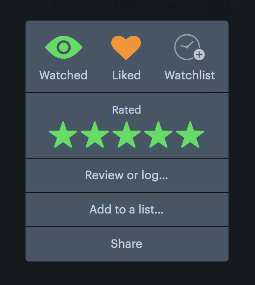

For love of film: I wanted to take on a suite of usability proposals to Letterboxd on the web, my favorite film site. I frequently watch movies while working and do my browsing, debating, and scouring for opinions on them online—and I'd love to expand on how Letterboxd can do that for myself and others.
In 2019, I found myself increasingly drawn towards film, and was lucky enough to be surrounded by people who I could share this love with. One of my new favorite sites is definitely Letterboxd, a film-focused social networking service. First introduced to it from film Twitter circles by seeing joke reviews highlighted on Oscar-nominated masterpieces, the sense of community it offered finally drew me onto the platform knowing it wouldn’t solely be traditional film buffs.
Letterboxd has been an amazing tool that has moved me to be more introspective about the film I consume, but it took a while for me to fully get into it, and the more that I use it — the more I’ve been thinking about ways to improve some of its features.
The following is a survey of some of the main frustrations on the web version of Letterboxd that I’ve collected from regular engagement with film communities, and my proposed redesigns and feature introductions.
Have other frustrations on Letterboxd's web version? Message me and let's look into it!
As Letterboxd’s creators get right: the first thing we want to do after we see a film is talk about it. On the film social network, why is it difficult and unintuitive to access the film logging feature when many of its social features and engagement notifications rely on it?
At the moment, the only flow on the website to log recently watched movies is to search for the movie title, then be delivered to a results page, click on a “Review or log…” button, then click on a checklist to specify the date watched—then confirming to successfully log a movie.
Immediately after watching a movie, we want to talk about it.
There needs to be a more direct way to get there.
After observing this problem, I talked casually with over a dozen users to obtain a deeper sense of this key action. (Thank you Film Twitter!) Here are the key insights I captured:
The main action that logs films to user diaries is unhighlighted, also doesn't showw lists
From the landing, there are no prompts to bring the user directly to a new movie without the minor search
It shouldn't take 5 clicks to get the user to log a film
As a starting point, I wanted to make better use of the Letterboxd home screen.
My proposed flow from the homepage involves a direct interaction from searching for a movie title (or director/actor) to opening up the review/log prompt to allow users to easily add movies.
On the homepage, I replaced the previous greeting/friend message with a new, large section prompting the user to write down what they’ve “seen” lately. Copy is very similar to the original page with the added “Seen anything lately?”
Search filters—enable users to scope out their film, director, actor, genre, etc.
Watchlist cues—drawing users from another feature
With these changes, users are given a more direct flow, get to tap into their rotating watchlists, and make the homepage not only useful, but also lively! There's also potential for more customization: header films can be swapped for lists or special events (Letterboxd went monochrome for Parasite once!)
Inclusion of search results page—The Letterboxd search results page tracks film titles, directors, cast & crew, and review contents. In certain cases (reused movie titles, similarly-titled sequels), I worry about the interaction bringing the user directly to the film page — but from my studies, this is rarely the case. Plus, search queries are generally filled with film reviews (always showcasing 250+ results, the maximum number displayed) when no relevant titles are available; this is a huge waste of clicks in most instances. I would love to see data on search queries and what results are most selected from the homepage to refine this thinking process further.
After designing a revised flow for logging and presenting it to friends and peers in online film communities, I also set my eye on modifying the interactions available on the logging prompt itself.
Limited interactions—The main actions available are writing reviews, specifying date watched and if the film is a rewatch, tagging, liking, and starring. Half of these interactions (tagging, liking) aren’t pushed into action for other users (there are no prompts to see that a friend recently “liked” a movie, tags serve more as keywords).
"Diary entry" is unclear—Currently, the review and diary prompts are mixed together, leading to a flow with mixed pointers. There needs to be more direction and clarity on the Letterboxd logging process.
Rating—Rating a movie is one of the easiest ways for us to share an opinion about it. It’s what the user takes action on first, too. I moved the rating upwards right next to the movie title/date watched to follow more into the regular reading pattern and establish prominence.
Tags—Next, I revised the tags area. I thought saving space here would be safer since from research, most of the users I talk to don't tag movies (or if they do, add jokes as tags)—and if they are, they don't usually require an amount that demands as much real estate as it presently has.
List—With the new space, I added in the list dropdown where users can be prompted to start a new list or select an existing one. Lists are one of the main means where users tell stories, share insights, and group together recommendations for the masses: putting it on this log section is important to get more people engaged on building them.
Favorite—Finally, along with the “Like” functionality, I added a favorite star. This would add the film (replacing the oldest selected one) to the user’s favorites on their profile.
From sharing these hi-fidelity mockups of the new prompt, I validated these assumptions and found that users started wondering why some of the existing actions were so scarce.
We're reducing the amount of clicks and making it more straightforward for users to log movies and share their thoughts.
One of the main reasons why people go to Letterboxd is because of its interface and community/discovery tools. By improving the logging process, I’d love to see how this gets users to continuously return to Letterboxd as a go-to website for sharing their own film discoveries and taking part in the network.
There’s nothing more critical to the film experience than being able to articulate and share our thoughts. It’s why movies like Uncut Gems with polarizing audience and critic responses show you that ratings alone won't cut it.
At present there’s a clear divide between two large user groups of Letterboxd: casual filmgoers (e.g. film twitter and Timothée Chalamet fans galore) that usually share humorous, pop culture-inflected thoughts, and film reviewers intent on sharing more traditional criticisms and breakdowns of pieces. In essence, the primary personas I’m thinking of are the following:
Younger film enthusiasts who offer casual, humorous, and witty engagements about movies and pop culture — with a lot of knowledge on trending actors; definitely engaged in the social aspects of Letterboxd
Classic film reviewers and critics — these users head to Letterboxd over IMBD to explore the social aspects of film. They’re engaged in analyzing themes and sharing longer thoughts on films.
I’m interested in exploring how we can potentially filter through comedic reviews and more informational or critical ones to cater to what users feel like discussing. Currently, reviews of all types are clumped together. The same users or jokes stay on top.
After all, post-Parasite (2019) I might want to decompress and just joke about the magnificence of another Bong (Joon-ho) hit, or work through a deeper criticism on all its commentaries. Better filtering through these conversations might help all types of users in the platform to engage in different types of commentary.
The first existing model that I wanted to lift from is the Steam Store; games are just as meticulously looked over through reviews, and are equally a space for even AAA games to be laughed over.
The way Steam approached reviews would then be my main foundation for exploring improvement on this feature.
There are several buttons to indicate whether the review is helpful, and a “funny” option. The copy on this is a bit awkward, so I opted for three bttons instead: retaining the likes, laugh, and insightful — buttons that are similar to recent, intuitive trends on reaction on sites like Facebook and LinkedIn. I decided on these three buttons a bit arbitrarily; though they’re also the types of content filters used on Steam games and based on discussion with other users. Would take a note to do more research on categorization in this area before potentially moving forward for implementation. These buttons help users gauge and filter reviews themselves while addding onto the types of interactions with them.
Most liked, popular reviews—you simply enjoyed it
Humorous reviews—you chuckled
Provocative reviews—you learned something
Moving onto viewing these reviews, I envision adding category buttons at the popular review view to sift through the three most relevant reviews categorized as needed.
By default, the more reviews view continues to just show the most liked, popular reviews — which at the moment inhibits smaller users or more diverse sets of reviews to be seen; these limits in visibility mean that users don’t get to see content produced outside of the followers that they already follow, and make it harder for less established users to rise in popularity.
By adding new categories to reviews and making review filtering a priority on film pages, we hope to diversify the content that's shown to users, and increase engagements in a space where reviews reflect changing times and discourse.
Have other ideas for improvements? Let me know!